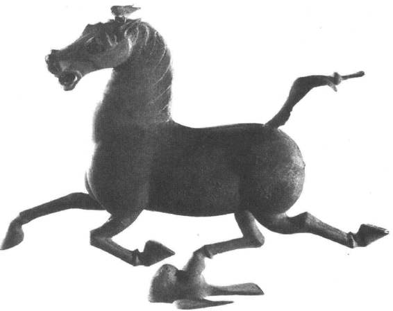

各种生物与人类的生活息息相关，可以说，自从人类出现之时起，人们便一刻也离不开生物。在长期的生活实践中，中国古代积累有极其丰富的生物学知识，并取得了许多重大的成就。
生物学上最基本的知识开始于对生物的分类，没有这种分类学上的知识，就不可能对纷繁杂沓的生物界进行科学性的处理、总结，并加以利用。早在殷代的甲骨文中就有不少关于动植物的名称，根据这些字形的特征来加以考察，可以看出当时人们已经产生了依据动植物的外部形态特征进行分类的认识。随着人们对动植物外部形态认识的逐步深化，到春秋战国时产生了具有鲜明特色的中国传统分类法。当时的分类知识大都散见于《周礼·地官》、《考工记·梓人》、《礼记·月令》、《管子·幼官》和《尔雅》等典籍之中。这些分类知识又大致可分为两种：一种是把植物分为皂物（柞栗之属）、膏物（杨柳之属）、核物（核果类、李梅之属）、荚物（荠荚、王棘之属）、丛物（萑苇之属）等五类，把动物分为虫类、鱼类（又分之为鳞类、蛇类与介类）、羽类、毛类和赢类（指人类，包括猿猴类）等五类，这种分类法是受五行说的影响而产生的；另一种分类法以《尔雅》为代表，把植物分为草、木两大类，把动物分为虫、鱼、鸟、兽四大类。后世的分类法，是在这两种分类的基础上进行综合而发展起来的。明代李时珍的《本草纲目》中的分类情况，可以为中国古代传统分类学之集大成者。《本草纲目》分植物为草、谷、菜、果、木五类，分动物为虫、鳞、介、禽、兽、人六类。从其动物的分类顺序中，可看出中国古代已有关于生物界发展变化的认识。
同时，在中国古代的传统分类学中，还包含有生物之“属”和“科”的分类概念。如《尔雅》中把山韭、山葱、山蒜等放在一起，相当于葱蒜属；把蜩、、、蜺等不同的蝉放在一起，相当于蝉科。《本草纲目》中把草这一大类又分为芳草、毒草、蔓草、苔草、山草、湿草、水草、石草等十小类，把大戟、甘遂、泽漆等大戟科植物分在一起。这些分类方法，都符合或近似于近代的生物学，在古代世界也是处于先进的地位。西方植物学的创始人瑞典的林耐（Carl von Linné, 1707—1778）的代表作《自然系统》，出版于1735年，全书仅12页，不但时间远远落后于中国，内容也远不如中国之丰富。
中国是一个农业古国，又长期进行畜牧饲养，从实际生产中积累有丰富的动植物生态学知识。《管子·地员篇》中就记载有极其宝贵的植物生态学知识，管仲在考察了土质优劣、地势高低和水泉深浅等地理条件与植物关系的基础上，得出了“凡草土之道，各有榖造，或高或下，各有草土”的重要结论，同时已初步认识到植物垂直分布的现象，即在同一地方，由于地形高低不同，所分布的植物种类亦不同的现象。后来，人们更进一步认识到地域和地理环境不同，所宜生长的植物也不同，并把这一认识在生产实践中加以应用。类似的动物生态学知识，在中国古代亦早已产生。特别是利用动物外形特征来鉴别动物品种优劣的外形学知识和理论，已达到了较高的水平，出现了一批相马、相牛、相鹤以至相贝之类的专门著述。从北魏贾思勰的《齐民要术》所转引的汉代《相马经》内容看，在汉代以前人们已认识到马体各部位之间的相互关系和内外联系。东汉的马援曾于公元45年铸立铜马于洛阳宫中，这是最早的马匹外形学研究的良马标准模型。有人认为1969年甘肃武威东汉墓出土的铜奔马“马踏飞燕”，可能就是一种良马模型。（图17—9）因当时良马等级有“袭乌”一级，即形容马可跑得快到追上疾飞的乌鸦。

图17-9 甘肃武威东汉墓出土的马踏飞燕
此外，中国古代已经注意动物生理状态随日夜、潮汐、月令、季节变化的节律问题，留下了大量关于生物节律的历史记载。如《吕氏春秋·精通篇》中说：“月望则蚌蛤实，群阴盈；月晦则蚌蛤虚，群阴亏”，宋代姚宽的《西溪丛语》中说：“蛤蜊、文蛤皆一潮生一晕”等，在《夏小正》、《礼记·月令》以及历代的农书中，都有许多关于物候的记载。这些，反映了中国古代对生物节律已有初步的认识。而且至迟在公元4世纪时，中国就已利用低温催青，改变了蚕一年二化的生长节律，成功地培育出第三化蚕，这是生物学史上一项划时代的成就。
对生物的遗传和变异，中国古代亦已有较深刻的认识，并在生产实践中加以应用。在长期的农业和畜牧业生产中，人们很早就认识到遗传现象的普遍存在，即“夫种麦而得麦，种稷而得稷，人不怪也”［20］。同时，又认识到遗传性与生活条件有着密切的关系，因此要求在生产中必须“适其天性”，不能“任情返道”，而要“顺物性，应天时”［21］，以满足生物的生活条件。但是，遗传性并不是一成不变的，对此中国古代也早已有所发现和认识。在《周礼》中就记载了谷子有成熟期较长的“稽”和较短的“稑”，《尔雅》中更记载有36个品种的马，明代的《天工开物·黍稷粱粟》中则进一步指出，粮食品种甚多，“相去数百里，则色、味、形、质随方而变，大同小异，千百其名”。基于对生物遗传和变异的认识，中国古代在农业和畜牧生产中，广泛地采用了存优汰劣的选种和育种方法，选留优质的种子、种畜以种植和养殖。同时，还进行了培育新品种的研究，成功地研制出大量菊花、牡丹、玫瑰等花卉以及家蚕、金鱼的新品种。中国古代在这方面的工作和记述，是任何其他国家和地区所无法比拟的，并为近代生物学的创立和发展提供了大量珍贵的资料。正如达尔文在《物种起源》一书中所说：“如果以为选择原理是近代的发现，那就未免和事实相差太远，……在一部古代的中国百科全书（指《本草纲目》）中，已经有关于选择原理的明确记述。”达尔文所著的《动物和植物在家养下的变异》，引用的中国资料就达几十条之多。
更为可贵的是，中国古代已进行了杂交育种的探索和研究，开拓了一条培育生物新品种的途径。其中，利用马与驴杂交而生的骡子，是这方面的一个重大成就。《吕氏春秋·爱士》中记载，“赵简子有两白骡”，表明这一工作至迟在二千多年前的春秋时期就已发明。此后，利用杂交优势，培育骡子的工作一直是家畜繁殖中的一件大事，受到历代的重视。植物的嫁接技术也是中国所首创的，在东汉的《氾胜之书》中，已记载有瓠的嫁接方法，后世更是在果木栽培中广泛加以应用。
在昆虫和微生物的利用方面，中国同样有着悠久的历史和杰出的成就。除了蚕的驯育和利用外，中国还是最早利用五倍子、虫白蜡和紫胶的国家，昆虫在医药中的利用更是多不胜举。在养蜂方面，元代刘基的《郁离子·灵丘丈人》中已概括出了蜂群管理法的原则，比德国齐从（J.Dzierzon）1845年发表的13条养蜂原理早五百多年。在西晋时中国已经采用放养黄惊蚁的方法防治柑橘的害虫，后来人们在甘蔗种植中又发明了养红蚂蚁防治螟害的方法。此外，在《齐民要术·种谷》中，记载有利用育种避虫的十个品种。这些是现代利用天敌治虫及作物育种避虫方法的先驱。至于利用微生物制曲、酿酒，进行食用加工，在中国更具有几千年的历史，至今仍在生产和生活中得到广泛地应用。
还应该特别指出的是，中国古代已经注意到生物资源的保护和合理利用的问题。战国时的荀子已经认识到，生态环境与社会安定和人类生活有着重大的关系。他指出：“天之所覆，地之所载，莫不尽其美，致其用，上以饰贤良，下以养百姓而安乐之。”［22］从周代开始，中国已经把保护山林，保护动植物资源，列为国家管理中的一项要务，并被视为关系到帝王能否治理国家的重要标志。“为人君而不能谨守其山林菹泽草莱，不可以立为天下王。”［23］因此，周代就已制定法律，规定了砍伐林木，猎取禽兽的月令，禁止非时伐木和狩猎，并委任有专门的官吏进行管理。后来的历代政府，也都不同程度地注意到生物资源的保护和合理利用的问题。中国古代在这方面的经验和教训，是值得认真总结，引为鉴戒的。